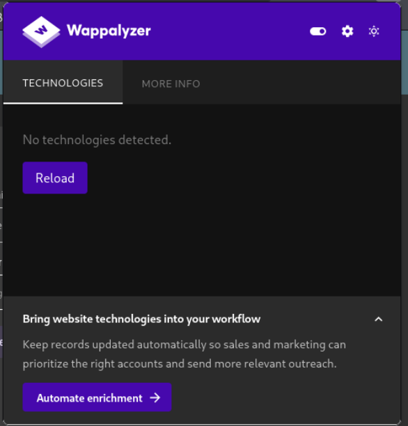
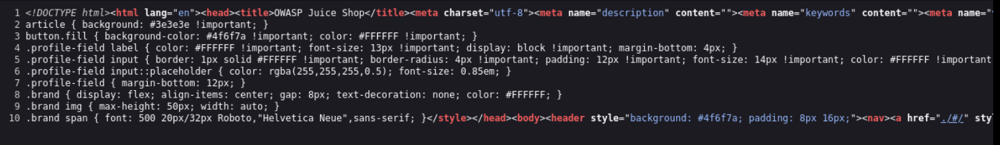
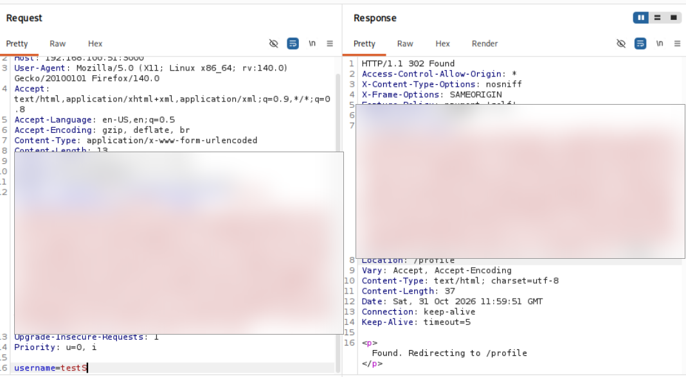
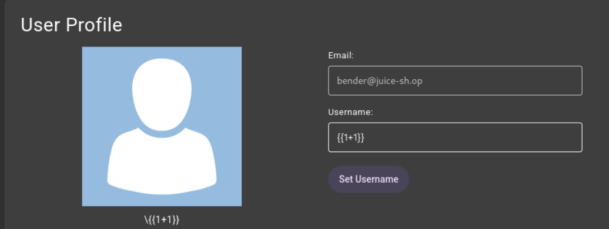
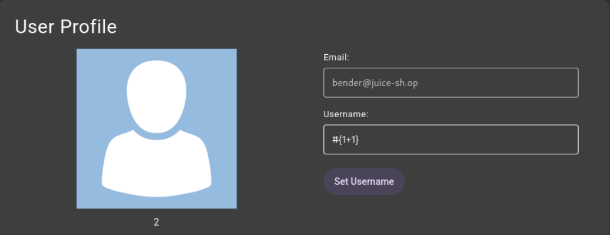
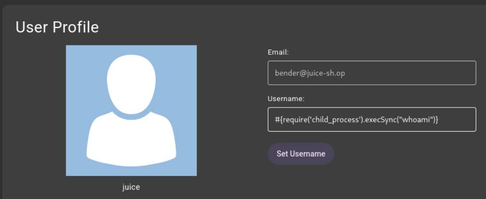
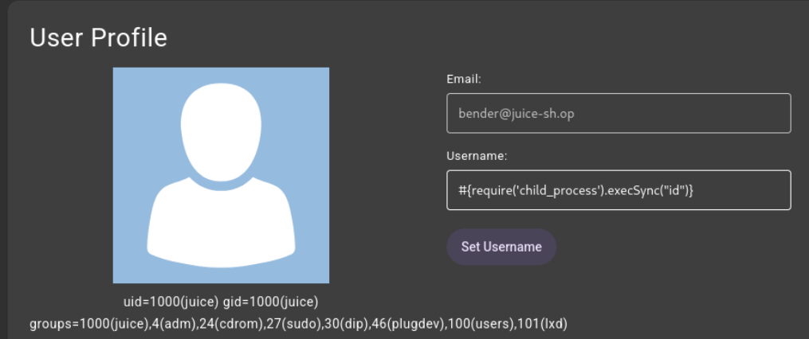

Write-up · Web application security ·
Server-Side Template Injection to Remote Code Execution
A lab assessment of an SSTI-to-RCE flaw in OWASP Juice Shop, written up as a formal report. The vulnerability itself is well understood; the aim here is to show the method: how the engine was fingerprinted, how command execution was confirmed, how the risk was rated with CVSS, and how the attack can be detected.
Scope and limitations
All testing was performed against a single OWASP Juice Shop instance on an isolated, host-only lab network (192.168.100.51:3000), using a low-privilege account. Nothing else was in scope: no other host, not the underlying operating system, and no internet-facing instance. Because the lab is isolated and self-contained, submitting a full command-execution payload cannot affect the host or any other system, which is what makes a live proof of concept safe to run here.
- Proof of concept, not a full exploit chain. The write-up demonstrates the SSTI-to-command-execution primitive with simple commands that return output, such as
idandwhoami. It does not extend to an interactive shell or persistence; attempts to reach a shell did not succeed here (see step 6). - Engine and context specific. SSTI exploitation depends on the template engine and on how input reaches the template. The syntax shown applies to Pug and this injection context, and would need adapting for another engine.
- Guided identification. Juice Shop is a deliberately vulnerable training application, so the vulnerability class was known in advance. In a blind engagement, classifying the flaw would be part of the work. The method below is written to stand on its own regardless.
Root cause
The profile page is one of the few server-rendered pages in Juice Shop, and it uses the Pug template engine. The user's stored username is incorporated into the server-side render in a way that causes Pug interpolation syntax in the username to be evaluated rather than printed. Because Pug compiles to JavaScript, an interpolation expression has access to the Node.js runtime, including require, which allows loading child_process and executing operating-system commands.
The username is attacker-controlled. It is set through POST /profile and stored with no validation of template metacharacters, then evaluated when the profile is next rendered by GET /profile. No other user is involved. The underlying fault is that user input is treated as template code rather than template data.
Risk assessment
The finding is rated Critical, with a CVSS v3.0 base score of 9.9:
CVSS:3.0/AV:N/AC:L/PR:L/UI:N/S:C/C:H/I:H/A:H
| Metric | Value | Rationale |
|---|---|---|
| Attack Vector | Network | The profile endpoint is exposed over HTTP and exploited remotely. |
| Attack Complexity | Low | No special timing or conditions. Setting the username and reloading the profile reliably triggers evaluation. |
| Privileges Required | Low | A valid authenticated session is needed. Registration is open, but the attacker still holds a low-privilege account. |
| User Interaction | None | No other user is involved; the attacker targets their own profile. |
| Scope | Changed | Exploitation of the web app executes OS commands on the host, a component beyond the application's own security authority. |
| Confidentiality | High | Command execution can read any file or secret the service account can reach. |
| Integrity | High | Arbitrary commands can modify files and data. |
| Availability | High | The service can be disrupted or crashed. |
The changed scope is the decisive metric: an SSTI flaw that reaches OS command execution breaks out of the application's authority and affects the host, which is what separates this from an application-only compromise. Adding temporal metrics for a demonstrated but un-weaponised proof of concept (E:P, Exploit Maturity: Proof-of-Concept; RC:C, Report Confidence: Confirmed) gives a temporal score of 9.4.
Enumeration and identification
Identification worked from the outside in: fingerprint passively, confirm the page is server-rendered, establish a clean baseline, then narrow the engine by testing payloads until one is evaluated.
Step 1 · Passive technology fingerprinting
Wappalyzer returned no technologies. This is worth stating for method: Wappalyzer fingerprints client-side frameworks and server banners, not the server-side template engine, so even a positive result would not have revealed Pug. Passive fingerprinting gave nothing to act on, so identification had to be active.

Step 2 · Page source review
Unlike most of Juice Shop, which is an Angular single-page app, the profile page is returned as server-rendered HTML with inline styles. Reviewing the source confirmed server rendering, which is the precondition for server-side template injection.

Step 3 · Benign baseline
The username was set to a benign value (test) and the request captured in Burp Suite. It was a standard form-encoded POST /profile that returned 302 Found and redirected back to /profile. Nothing in the exchange revealed how the value was processed, so this stood as a clean baseline to compare against. The session token has been redacted.

username=test returns 302. Session token redacted.Step 4 · Engine identification
Using the engine list and example syntax from PortSwigger's SSTI material as a checklist, each template syntax was submitted against the username field until one was evaluated. The {{1+1}} payload rendered literally (shown escaped as \{{1+1}}), ruling out the {{ }} family such as Twig and Jinja.

{{1+1}} renders literally, ruling out the {{ }} engines.Pug's interpolation syntax uses #{ } instead. The #{1+1} payload rendered as 2, confirming server-side evaluation and identifying the engine as Pug. The delimiter is Pug's; the expression inside it is evaluated as JavaScript, which is what makes command execution possible.

#{1+1} evaluates to 2: the engine is Pug and the input is executed.Step 5 · Confirming command execution
Because Pug compiles to JavaScript, a Node command-execution payload was tested. #{require('child_process').execSync("whoami")} returned juice, and #{require('child_process').execSync("id")} returned the account's full identity, including membership of the sudo group. The sudo membership points to privilege-escalation potential beyond the initial execution context. These discovery commands map to ATT&CK T1033.

whoami returns juice: arbitrary commands run as the service account.
id confirms the juice account and its sudo group membership.Step 6 · Attempting shell escalation
Moving from single commands to an interactive shell did not succeed. Invasive payloads, including base64-encoded and otherwise obfuscated attempts, caused the profile page to return HTTP 500, and the account's profile became unreachable until the application was restarted. Command execution was reliable for discrete, output-returning commands, but was not escalated to an interactive session in this environment. Recording this honestly is part of the point: the finding is a confirmed command-execution primitive, not a claim of full compromise.
Attack path
| Stage | Technique | MITRE ATT&CK |
|---|---|---|
| Initial access | Exploit public-facing application | T1190 |
| Execution | Command and scripting interpreter: JavaScript | T1059.007 |
| Execution | Command and scripting interpreter: Unix shell | T1059.004 |
| Discovery | System owner/user discovery | T1033 |
Impact
Confirmed arbitrary command execution on the host as the juice service account. In this state an attacker can read and write files the account can reach, read application secrets and the embedded database, and run further commands. The account's sudo group membership indicates a plausible privilege-escalation path (ATT&CK T1548.003), though privilege escalation was not demonstrated here. Because exploitation of the web application results in command execution on the host operating system, the CVSS scope is Changed, and confidentiality, integrity and availability impacts are all High.
Detection
The attack can be detected generically, in three layers, strongest first.
- Process lineage (highest fidelity). The Node.js process serving Juice Shop should never spawn a shell or system utility. A
nodeprocess spawningsh,bash,id,whoamior similar is a high-confidence indicator of command execution through an injection flaw. The detection matches on the parent being the application process and the child being an interpreter or common utility. Maps to ATT&CK T1059 (.004 Unix shell, .007 JavaScript). - Application and log analysis. The attack leaves a recognisable pattern: a
POST /profilewhose username contains template or runtime indicators (#{,require(,child_process), usually followed by aGET /profilefrom the same session, and often a500response after a suspicious update. This layer is evadable through obfuscation and is best treated as corroborating evidence. Maps to ATT&CK T1190. - Host artefacts. Where a payload writes to disk or opens a network connection, file-integrity and egress monitoring attribute the activity to the application process tree. Discovery commands such as
idandwhoamirun by the application map to ATT&CK T1033.
Of these, process lineage is the most reliable: it fires at the moment of execution and does not depend on recognising a specific payload string. This is the same signal the EDR project uses to catch RCE, where a shell or utility spawned by the Juice Shop node process is exactly what the RCE rule looks for.
Remediation
- Primary fix: do not let user input be evaluated as template code. Pass the username to the template as a bound variable so the engine escapes it and treats it as data.
- Remove any path that extracts and evaluates the
#{ }content of the username. - Validate the username on input (an allow-list of permitted characters and a length limit) as defence in depth.
- Where server-side rendering of user content is genuinely required, use contextual auto-escaping and never raw evaluation of user-supplied strings.
Verifying the fix: re-run the identification probe. A patched application renders #{1+1} as the literal string rather than 2, confirming the input is no longer evaluated.
Appendix · Payloads used
| Purpose | Payload | Result |
|---|---|---|
Rule out {{ }} engines | {{1+1}} | Rendered literally |
| Confirm SSTI, identify Pug | #{1+1} | Rendered as 2 |
| Confirm command execution | #{require('child_process').execSync("whoami")} | juice |
| Confirm execution and context | #{require('child_process').execSync("id")} | uid=1000(juice), groups include sudo |
References
- OWASP Juice Shop Project
- PortSwigger: Server-Side Template Injection (Web Security Academy)
- PortSwigger Research: Server-Side Template Injection (James Kettle)
- CWE-1336: Improper Neutralization of Special Elements Used in a Template Engine
- MITRE ATT&CK T1190: Exploit Public-Facing Application
- MITRE ATT&CK T1059: Command and Scripting Interpreter